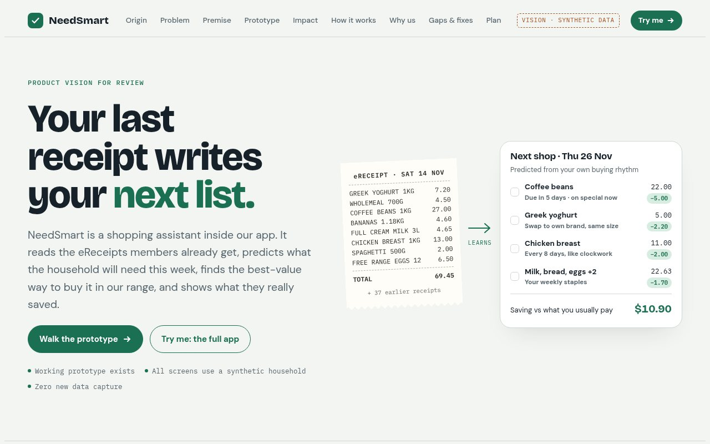

I Prepared for the Pitch. I Forgot to Prepare for the Room.
Today I shared an AI idea I’ve been building on the side, and I learned something simple that I’d somehow skipped.
I spent my prep on the right-sounding things: lead with impact, not jargon. Keep the technical detail in the back pocket. Have the demo ready.
What I didn’t do was get to know my audience first.
It’s easy to assume that anyone who’s interested, or anyone in the same organisation, is automatically the right audience for an idea. Often they’re not, and that’s nobody’s fault. Different people care about different things, and a pitch has to meet them where they are.
What I’m taking into the next one
- Map who’s listening before writing a single slide
- Ask what problem they own, then frame the idea around it
- If the room isn’t the decision-maker, reshape the ask rather than repeat the pitch
- Treat a lukewarm reaction as information, not rejection
The idea: NeedSmart
The idea itself is NeedSmart, an open-source grocery assistant that learns a household’s buying rhythm, then matches what you’re likely to run low on with specials found online. It predicts needs, not barcodes (“milk”, not one product code). It reminds you only when you’re actually running low, suggests swaps only where you don’t mind switching, and shows the honest saving against what you usually pay.
The part I’m proudest of is that it doesn’t remind everyone. Four plain checks decide who it can remind with confidence: Do we know them well enough? Are they creatures of habit? Do we know what they need? Are our predictions right? That works out to about 4 in 10 households. A reminder that arrives at the wrong time costs more trust than no reminder at all.

All data is synthetic. No real receipts, prices or customers are used.
Story: https://travisjohn.github.io/needsmart/
Try it: https://travisjohn.github.io/needsmart/app.html
Good ideas still need the right audience. Feedback is welcome, especially from anyone in retail, loyalty or personalisation.